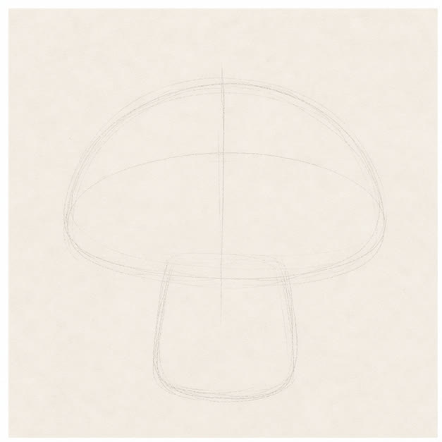
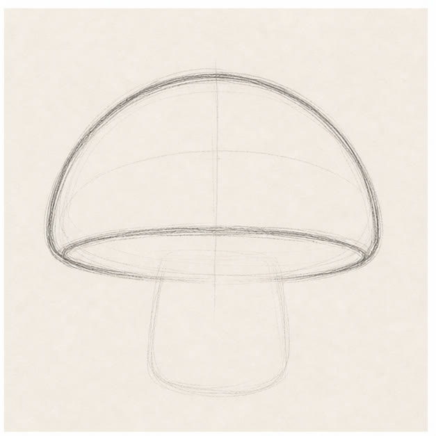
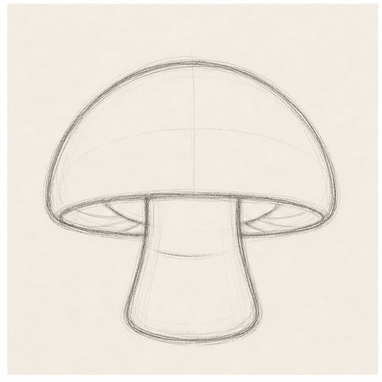
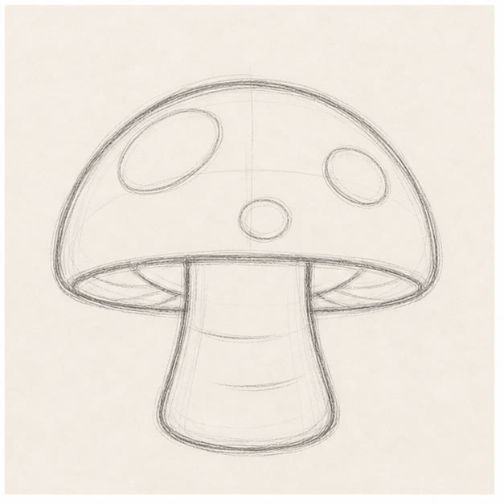

From the archive
Let's draw a cozy mushroom
Work lightly through the construction, then darken only the lines that help the finished sketch.
-
01

Set the cap and stem
Draw a wide oval for the cap and a tall rounded rectangle underneath for the stem.
Sketch tip: Overlap the stem with the cap. You will erase the hidden line after the proportions feel right.
-
02

Shape the cap
Use the top half of the oval to draw a broad dome. Add a shallow curve across the bottom edge.
Sketch tip: Keep the cap's lowest curve flatter than its top. That makes the mushroom feel grounded.
-
03

Flare the stem
Curve both sides of the stem outward near the bottom, then add a low mound where it meets the ground.
Sketch tip: The stem is narrower just below the cap and widest at the base.
-
04

Add spots and folds
Scatter three small cap spots, then draw a few short folds beneath the cap and across the stem.
Sketch tip: Use an odd number of spots and vary their size. Even spacing can look mechanical.
-
05
Shade the rosy cap
Darken the useful contour and add loose pink pencil across the cap, leaving uneven white gaps.
Sketch tip: Put more color near the lower edge and spots. The lighter top will make the cap feel round.